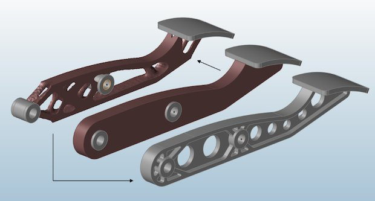

Topology Optimization using SolidWorks
Conventional brake pedal had excess material leading to higher weight and reduced efficiency.
Used topology optimization in SolidWorks to remove unnecessary material while maintaining strength.

Optimized design improved efficiency while maintaining safety, demonstrating effective engineering design.